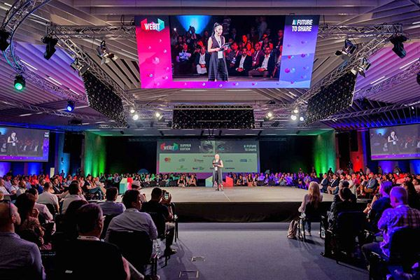

Conferences · AI
Webit 2027
- Dates
- Location
- Sofia, Bulgaria
- Format
- In-person
- Category
- AI
- Industry
- AI
- Organiser
- Webit
- Price
- Official tickets page lists a Pro Ticket at €280 excl. 20% VAT and a Platinum Ticket at €1,500 excl. 20% VAT, and states “Only 200 public tickets.” The 200-ticket cap is a sales limit, not stored as expected attendance.
- Official website
- https://www.webit.org/2027/sofia/index.php
- Tickets
- https://www.webit.org/2027/sofia/tickets.php
About
Dates are local civil dates in Bulgaria (Eastern European Time, UTC+2 / UTC+3 in summer).
Topics: artificial intelligence, business, technology.
No organiser attendance figure found on the official pages fetched 24 Nov 2026. Ranked by our estimated size tier 'small' (under 10,000 attendees/visits), a judgement from format, venue and scale, not an official number.